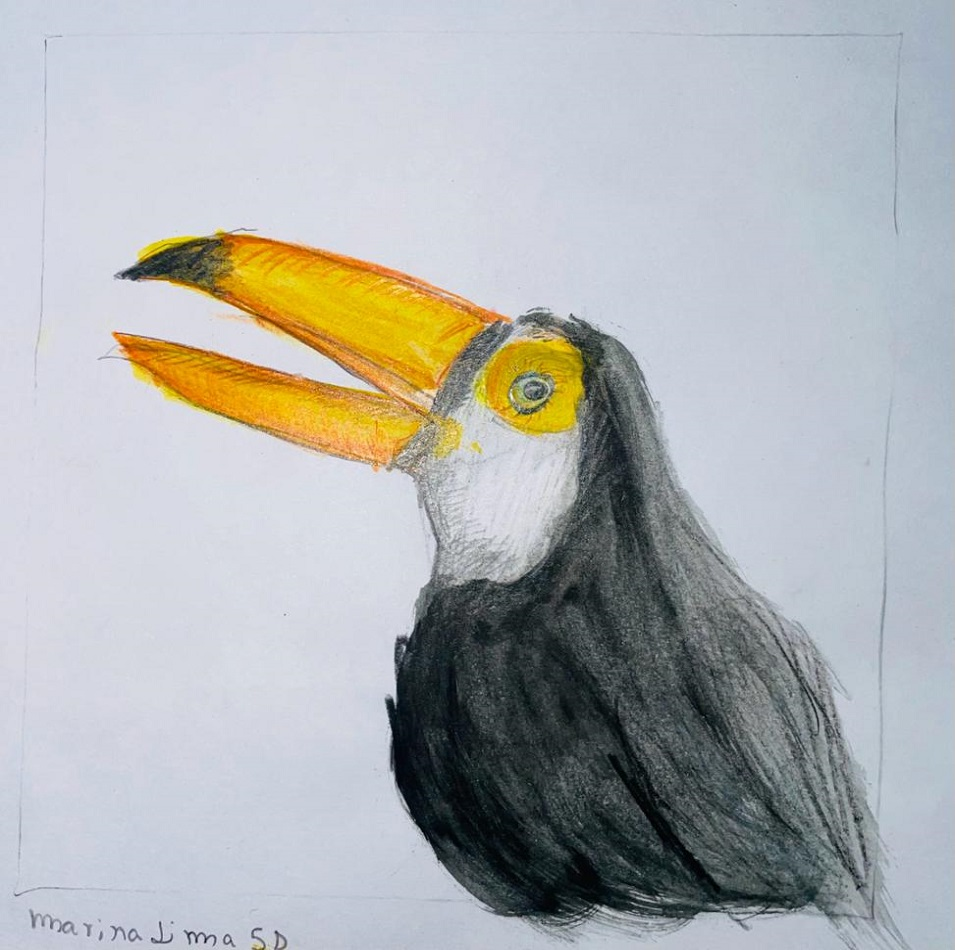
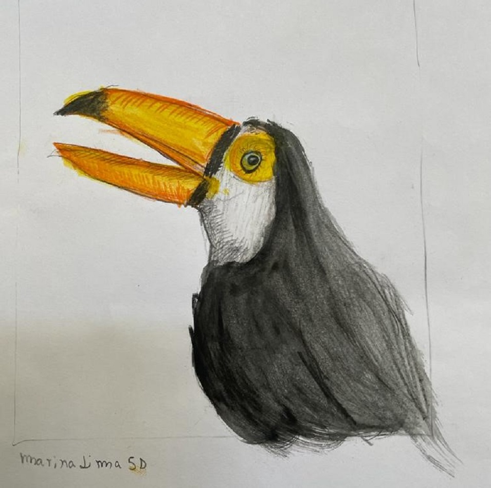
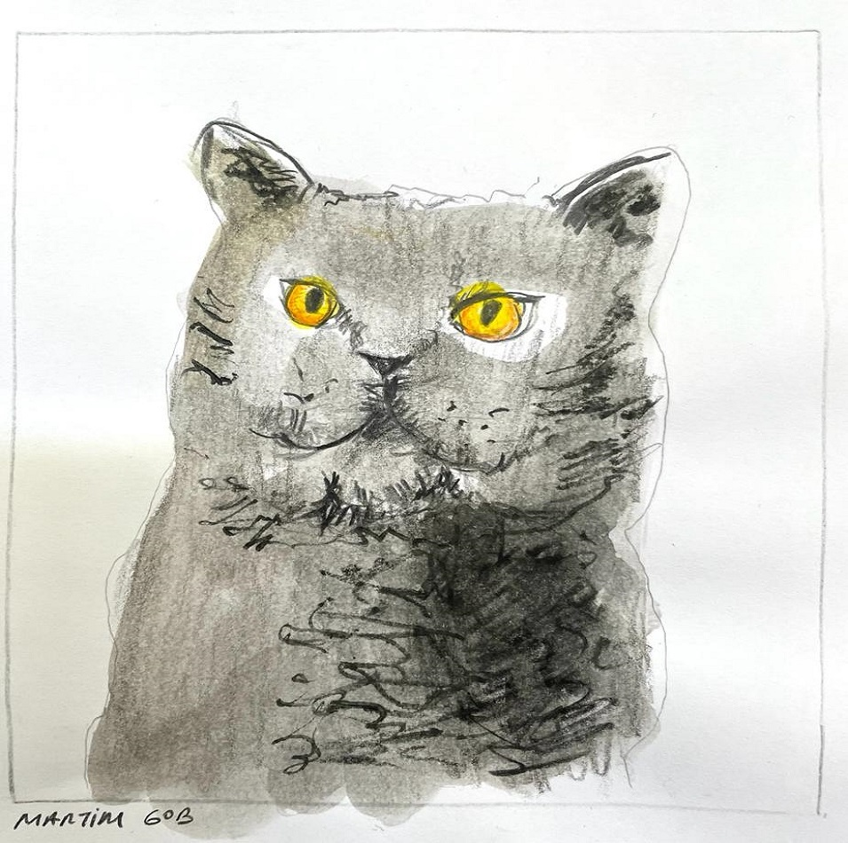
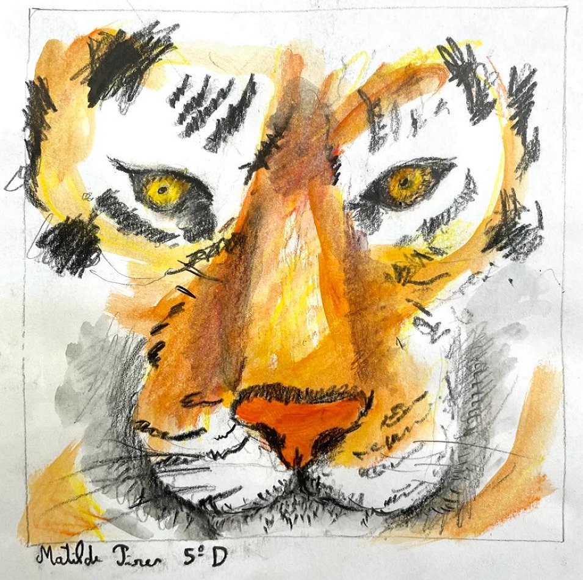
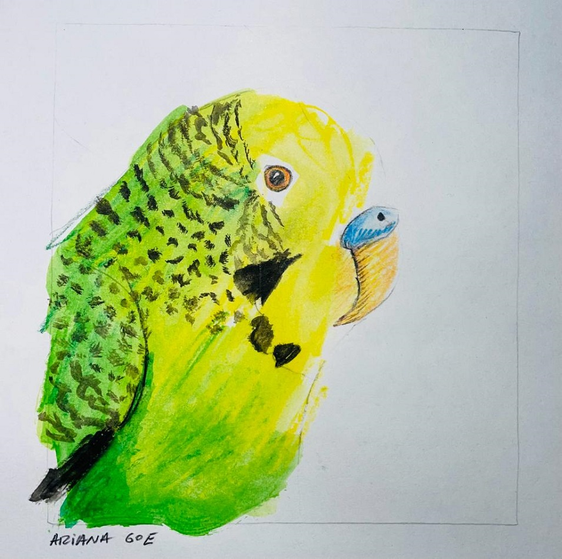
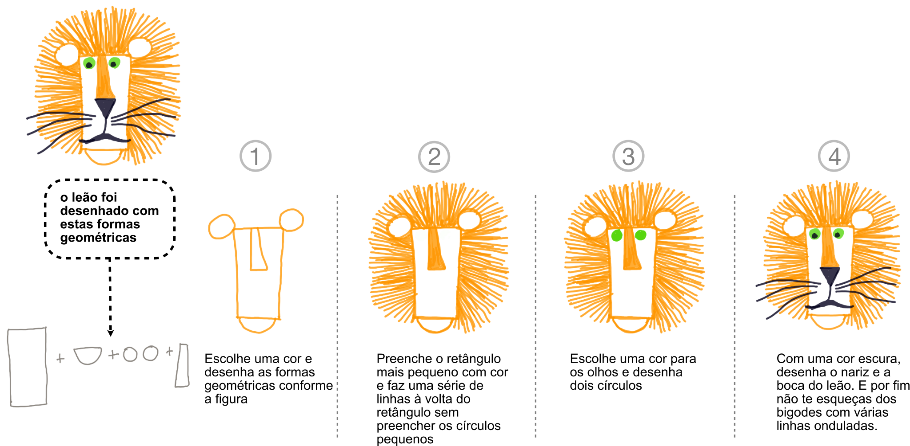
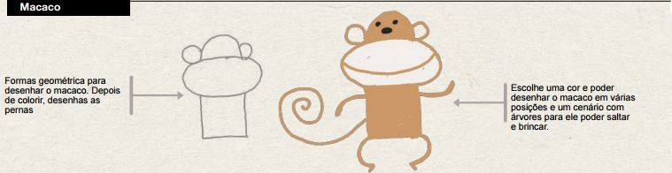
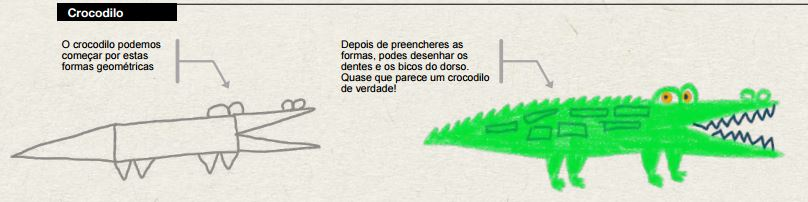

Aprender com Artes

Trabalho dos Alunos

Marina Lima 5º D

Mariana Lima 5ºE

Martim 6ºB

Matilde Pires 5ºE

Ariana 6ºE
Actividade

Objectivos:
- Atividade de desenho a partir de formas geométricas simples.
- Desenho e junção de formas na criação de personagens e/ou objetos imaginários.
- Estímulo da imaginação e experimentação de diferentes materiais riscadores como forma de expressão plástica
Nível de Ensino:
- 1º Ciclo e outros
Grau de Dificuldade:
- Fácil e médio ⭐ ⭐ ⭐
Materiais
- Folhas de papel,
- Lápis de cor,
- Marcadores coloridos,
- Lápis de cera
Outros animais |
|
Leão
 |
|
Cão
 |
|
Macaco
 |
|
Crocodilo
 |